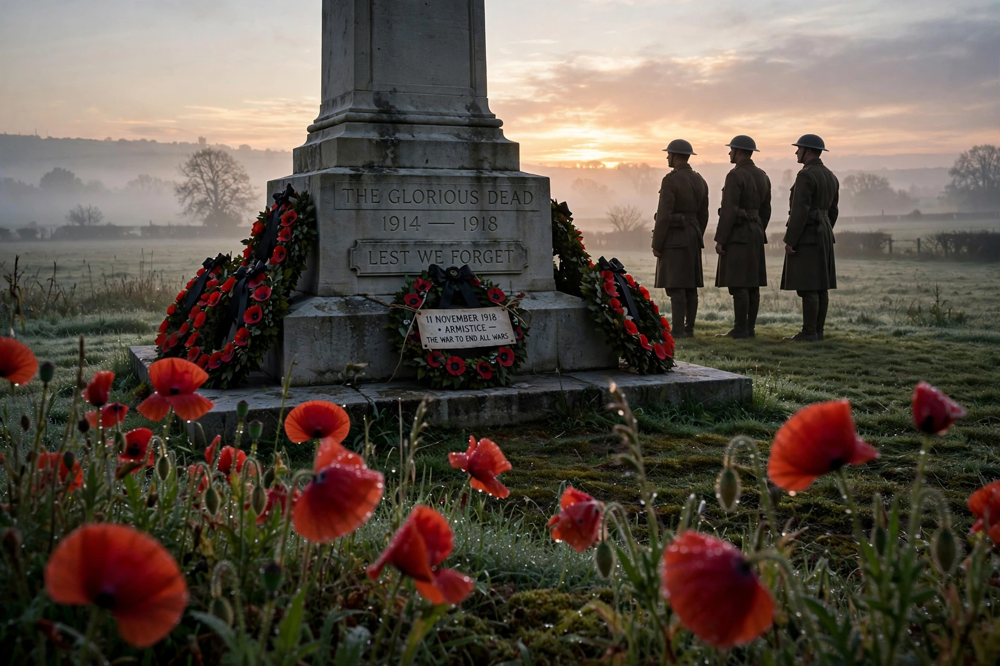

Armistice Day, later known as Remembrance Day in Commonwealth countries and Veterans Day in the United States, is observed on 11 November to commemorate the armistice signed between the Allies and Germany ending fighting on the Western Front of the First World War.

| Armistice Day | |
|---|---|
| Date | 11 November |
| First observed | 1919 |
| Significance | Armistice of 11 November 1918, effective 11 a.m. |
The armistice was signed in a railway carriage in the Forest of Compiègne, France, in the early hours of 11 November 1918 and took effect at 11 a.m. — "the eleventh hour of the eleventh day of the eleventh month". King George V proclaimed the first Armistice Day in 1919 across the British Empire, with a two-minute silence at 11 a.m.
In the United Kingdom and Commonwealth, Remembrance Sunday (nearest Sunday to 11 November) features ceremonies at cenotaphs and the wearing of remembrance poppies. The US renamed its holiday Veterans Day in 1954 to honour all veterans. France and Belgium keep 11 November as a public holiday, Armistice Day (Jour de l'Armistice).